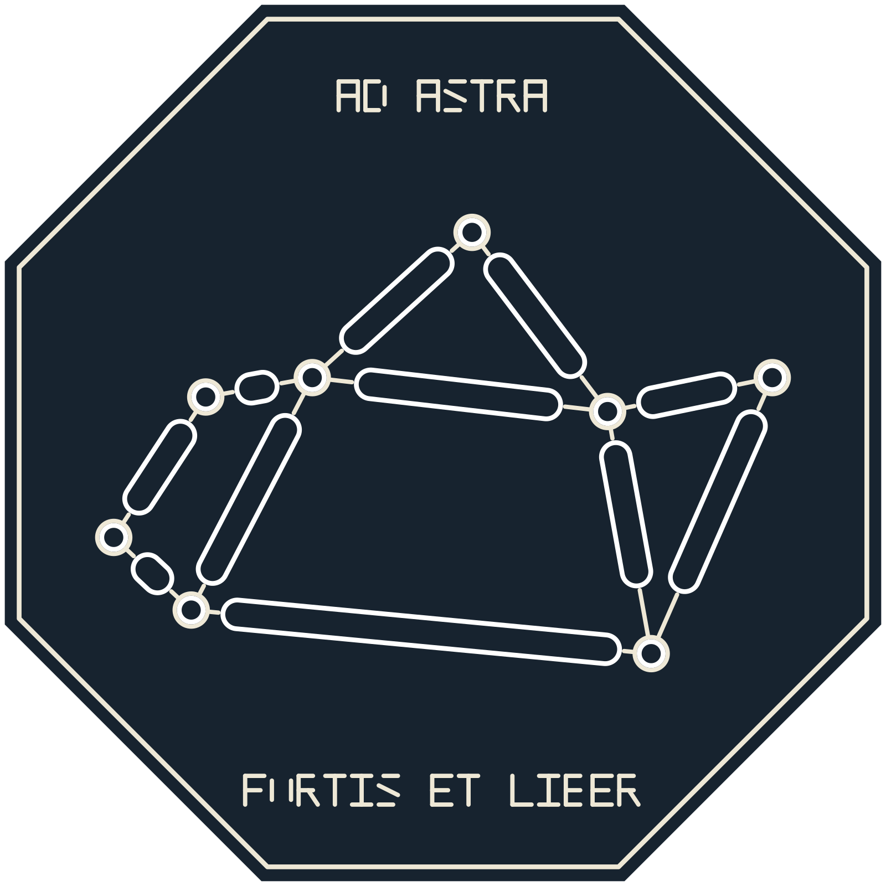
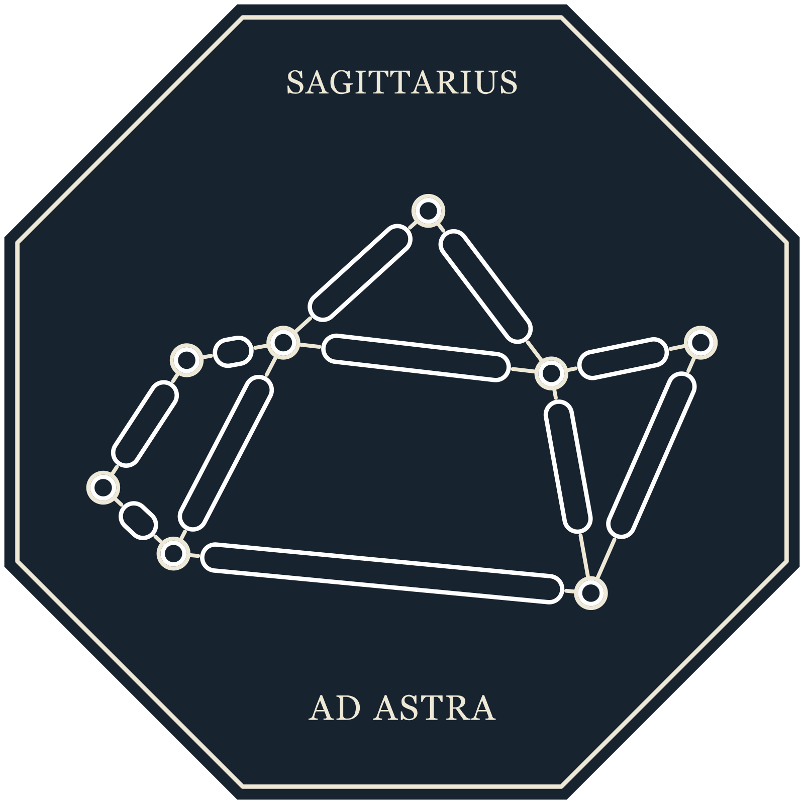
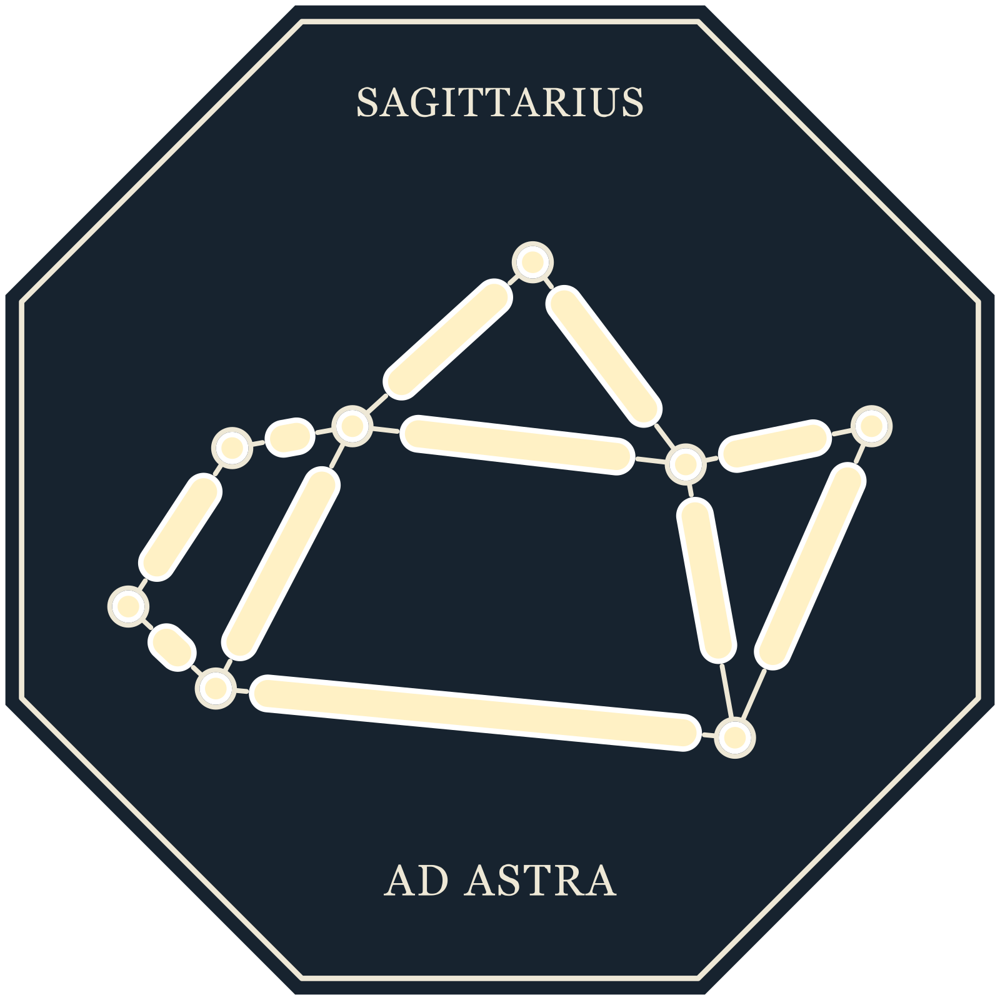
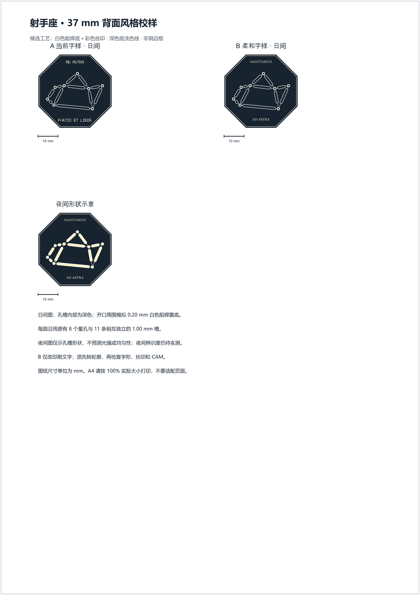

A · 当前字样 · 日间

白色阻焊底示意、深色底、浅色线；复用现有 8 个星孔和 11 条分离槽。屏幕图用于比较排版，不代表实物透光或供应商 CAM 结果。
B 版仅为印刷候选。目前 SAGITTARIUS / AD ASTRA 仍是系统字体文字；正式使用前须转成矢量轮廓并核对字号、笔画、丝印、alpha 与 CAM。该候选尚未制造验证。



浅色表示开口位置；不表示亮度或均匀性。
三个图案各有 10 mm 标尺。打印 SVG 时选 A4 与 100% / 实际大小，不要“适合页面”。
打开 A4 SVG · 打开 A4 PNG